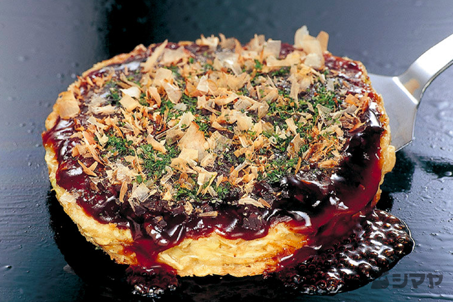

Home
Okonomiyaki

Japanese Pancake
Okonomiyaki is a Japanese pancake stuffed with yummy goodness!
The ingredients provided are the basic okonomiyaki recipe.
Feel free to add any vegetables or other meats. Have fun playing with the ingredients!
Ingrediants
Pancake
- 1 cup all-purpose flour
- ⅔ cup water
- 4 cups chopped cabbage
- 6 strips cooked bacon, crumbled
- 2 eggs
- 1 sausage, diced, or more to taste (Optional)
- ½ cup chopped green onions
- ¼ cup cooked shrimp (Optional)
- ¼ cup shredded cheese (Optional)
- ¼ cup tenkasu (tempura pearls)
- 1 tablespoon vegetable oil, or to taste
Sauce
- 2 tablespoons soy sauce
- 1 tablespoon ketchup
- 1 teaspoon white vinegar
Garnish
- 1 tablespoon panko bread crumbs, or to taste
- 1 teaspoon mayonnaise, or to taste
Steps
- Mix flour and water together in a bowl until smooth. Stir in cabbage, bacon, eggs, sausage, green onions, shrimp, cheese, and tenkasu.
- Preheat a griddle to 400 degrees F (200 degrees C) and coat with oil.
- Pour 1/4 of batter onto preheated griddle. Cook until golden brown, about 6 minutes per side. Transfer to a serving plate. Repeat to make a total of 4 pancakes.
- Make sauce: Mix soy sauce, ketchup, and vinegar together in a small bowl. Drizzle over pancakes.
- Garnish with panko and mayonnaise.